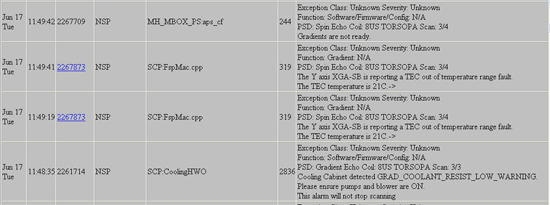
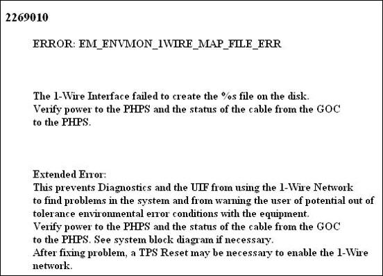
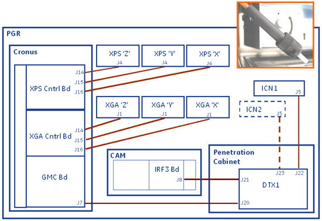
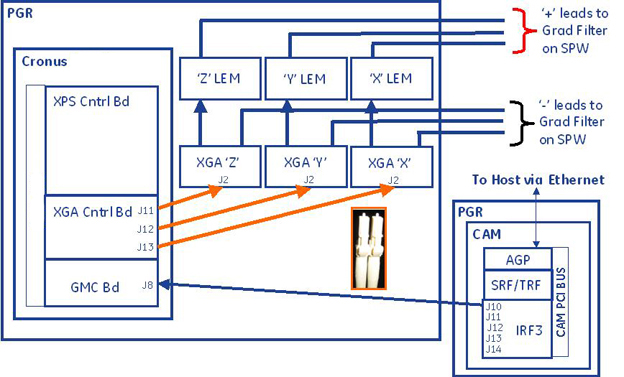

GE Exclusive Use Only
Direction 5670000, Rev# 1
Optima MR450w 1.5T Service Methods
Module Version 6.0, Version Date 12/8/09
GE Exclusive Use Only |
| NOTE: | For gradient block diagram, select Gradient option in the Interactive Block Diagram document. For gradient output cable diagram, see Section 5. |
Gradient Diagnostics offers three tests and you should run all three rather than one or two of them. The three tests are: Gradient Hammer, Gradient Fidelity, and Gradient Static. To locate the tests on the Customer Service Desktop, navigate to:
Diagnostics > > System Function > > Gradient > > Gradient Diagnostics
Diagnostics > > Hardware Location > > PGR Cabinet > > Gradient > > Gradient Diagnostics
Accept all defaults on the Gradient Diagnostics screen and click the Run button. See Illustration 1
Illustration 1: Gradient Diagnostics Screen

| NOTE: | Accepting all defaults means do not clear any Test Selection check boxes nor changing Test Length from Short to Long. |
For more information on each test, see Gradient Hammer, Gradient Fidelity, or Gradient Static
If the system returns failures after running the three Gradient tests, do any of the following:
Access the GE System Log and find the results from your test.
Illustration 2: GE System Log

Illustration 3: GE Service Log, Extended Messages

In the third column, locate extended log messages that appear as links and click the desired link.
Illustration 4: Sample Extended Message

Read the Extended Message and perform recommended action to help you solve the error.
Octavious Link will help in the debug of XGA/XPS/AUX fiber links. See Section 3 for more information.
ST fiber: same fiber used for X, Y, and Z gradient lines as in previous EXCITE based products. See Illustration 5.
Clock Synchronization Data Fibers are not axis specific. Can swap them between connectors on XGA (eXtreme Gradient Amplifier) and XPS (eXtreme Power Supply) control boards and system does not care. See Illustration 6.
Illustration 5: Clock Synchronization Data Fibers

Illustration 6: XPS, XGA, and GMC Control Boards

Illustration 7: Auxiliary Board Fiber Link

Octavius Link provides three (3) static diagnostic signals to the GMC that act as back up in case the main fiber link J2/J3 is damaged or disconnected. As shown in Illustration 8, cables in green are Octavius Link. While the system posts an error concerning any component with a faulty Octavius Link connection, it will not pause scanning. The Octavius link is not to be confused as an Ethernet connection, even though it is an RJ-45 cable connection.
Illustration 8: Octavius Link - Auxiliary Board Through XGA and XPS

Illustration 9: Octavius Link - Between XGA and XPS

Be aware that swapping gradient data fibers will apply ECC (Eddy Current Compensation) to wrong coil axis which could potentially result in SPT eddy current failures or even gradient current distortion faults. May need to disable eddy compensation in these cases.
| NOTE: | ECC can be disabled by performing the following:
|
Perform a TPS Reset after swapping any two gradient data fiber cables.
Illustration 10: X, Y, and Z Gradient Data Flow

Before swapping cables, perform LOTO for the PGR PDU/Gradient Subsystem.
To help you solve image problems, try using some of the following recommended hardware solutions:
Swap output cables from XGA control board (J11/J14, J12/J15, J13/J16).
Swap input cables at the XGA amplifiers J1/J2 between axis.
Swap amps and power supplies (outers to inners, x to y, and y to z).
See Illustration 11.
Swap outputs at the bus bar or at top of PGR cabinet (using tools, such as deep-well 9/16 socket). See Illustration 12.
Illustration 11: Sample of Y and Z Swap

Illustration 12: Top of Gradient Cabinet

Illustration 12 depicts X, Y, and Z at the top of the Gradient Cabinet where you can swap positions if necessary.
Swapping gradient output cables will apply eddy compensation to wrong coil axis which could potentially result in SPT eddy current failures or even gradient current distortion faults. May need to disable eddy compensation in these cases.
| NOTE: | Do not swap output cabling at the XGA terminal lugs and do not swap LEMs between XGA's . |
The gradient output cables run between the PGR cabinet through the PEN Panel to the gradient bus bar. See Illustration 13.
Illustration 13: Gradient Output Cable Diagram

Verify all system interconnects are back in normal configurations.
Run the DQA II Tool and verify that the image orientation is correct.